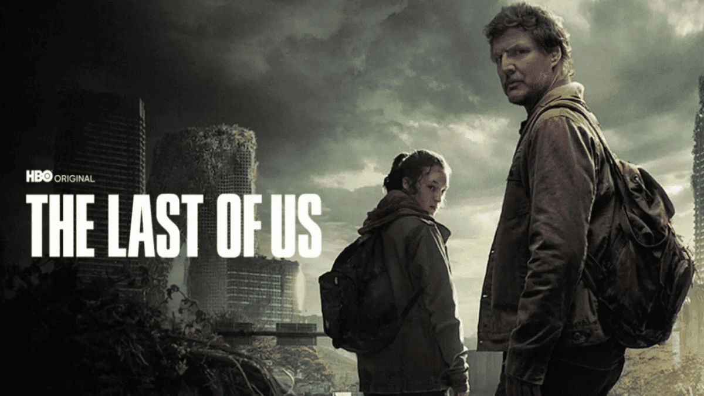

A Série The Last of Us

The Last of Us (série de televisão)
The Last of Us é uma série de televisão estadunidense dos gêneros pós-apocalíptico, drama e thriller, baseada na franquia de jogos eletrônicos homônimos desenvolvidos pela empresa Naughty Dog. Sua estreia ocorreu no dia 15 de janeiro de 2023 através da HBO.[2] A série acompanha a jornada de Joel (Pedro Pascal), um contrabandista com a tarefa de escoltar a adolescente Ellie (Bella Ramsey) através de um Estados Unidos pós-apocalíptico em um futuro distópico. Na estreia de seu episódio piloto, "When You're Lost in the Darkness", a série atingiu a segunda maior audiência em uma década da emissora com 4.7 milhões de espectadores incluindo tanto o canal de televisão HBO quanto o streaming HBO Max, ficando atrás apenas de House of the Dragon, cuja audiência aproximou-se de 10 milhões. Conforme a empresa, inclusive, as noites de estreia aos domingos representam usualmente entre 20 a 40% da audiência bruta por episódio.[3][4][5] Foi revelado ainda conforme o segmento de comunicação da empresa que a audiência na América Latina fora a maior em uma estreia de série e que os Brasileiros foram responsáveis por mais de 50% de todo o engajamento por meio de publicações e interações em redes sociais acerca da série após o lançamento do episódio piloto.[6] Considerada a maior produção televisiva da história do Canadá, começou a ser filmada em Calgary, Alberta, em julho de 2021 e terminou em junho de 2022.[7] É a primeira série da HBO baseada em um jogo eletrônico, sendo uma produção conjunta da Sony Pictures Television, PlayStation Productions, Naughty Dog, The Mighty Mint e Word Games. A primeira temporada consiste em 9 (nove) episódios escritos por Craig Mazin e Neil Druckmann; o último escreveu e dirigiu o jogo. O compositor do jogo original Gustavo Santaolalla compôs a trilha sonora e Mazin dirigiu o episódio piloto.[8] A primeira temporada estreou em 15 de janeiro de 2023.[9] Em 27 de janeiro de 2023, após a exibição de apenas dois episódios, a HBO confirmou a renovação da série para a segunda temporada.[10]
1ª temporada (2023) Em 26 de setembro de 2003, um surto causado por um fungo conhecido como cordyceps causa pânico nos Estados Unidos, transformando os hospedeiros humanos em monstros canibalísticos conhecidos como Infectados. Em 2023, vinte anos depois da infecção, Joel (Pedro Pascal), um dos sobreviventes, é contratado para contrabandear uma garota de catorze anos chamada Ellie (Bella Ramsay), para a base do grupo miliciano Vaga-Lumes a fim de ser desenvolvido uma cura, já que a jovem se descobre imune a doença. O que começa como um pequeno trabalho se torna uma aventura perigosa e emocionante, conforme eles atravessam o país e dependem um do outro para sobreviver em meios a vários monstros e inimigos.
2ª temporada (2025) Uma vez na base dos Vaga-Lumes, Joel descobre que a única forma de fazer uma cura é sacrificando Ellie para extrair sua imunidade, isso o faz matar a equipe médica do lugar e salvar a garota da mesa de cirurgia. Ele esconde o que realmente aconteceu de Ellie, mas não por muito tempo e isso acaba interferindo na relação dos dois. Cinco anos depois, os dois tentam manter uma vida tranquila na comunidade de Jackson, Wyoming, liderada por um conselho no qual o irmão e a cunhada de Joel, Tommy (Gabriel Luna) e Maria (Rutina Wesley), são membros. Ellie, agora com 19 anos, se torna mais proativa na defesa da comunidade e mantém relação de amizade próxima com uma jovem chamada Dina (Isabela Merced). Infelizmente, a tranquilidade da comunidade não dura muito nos tempos sombrios do apocalipse e as consequências das ações de Joel chegam com a aparição de uma mulher chamada Abby (Kaitlyn Dever) e seu grupo.
Após o lançamento do primeiro jogo, The Last of Us, em junho de 2013, duas adaptações cinematográficas foram tentadas: um longa-metragem escrito pelo criador e diretor criativo do jogo Neil Druckmann e produzido por Sam Raimi entrou em hiato, e um curta em animação para o cinema desenvolvido pela Oddfellows foi cancelada pela Sony.[54][55] Em março de 2020, uma adaptação para a televisão foi anunciada nos estágios de planejamento na HBO, que deve cobrir eventos do primeiro jogo e possivelmente algumas partes de sua sequência, The Last of Us Part II.
[wikipedia]
Elenco e personagens
Pedro Pascal como Joel Miller; um sobrevivente endurecido, frio e amargurado, que é atormentado pelo trauma de seu passado com a trágica morte de sua filha.[12] Joel recebe a tarefa de contrabandear Ellie para fora de uma zona de quarentena em Boston, Massachusetts.[13] Na série, Joel é retratado como mais vulnerável fisicamente na série em comparação com o jogo — ele tem dificuldade de ouvir em um ouvido e seus joelhos doem quando ele fica de pé. Nos jogos originais, Joel teve sua voz e captura de movimentos realizados pelo ator Troy Baker.[14]
Bella Ramsey como Ellie Williams; uma garota órfã de quatorze anos que cresceu solitária em uma zona militar opressora comandada pelos membros dos Vaga-Lumes, um grupo miliciano contra as autoridades das zonas de quarentena impostas pelos militares.[15] Ellie é uma jovem destemida e sensível, que após ser atacada e mordida por um infectado, milagrosamente ela sobrevive e se torna imune a contaminação, assim virando uma peça-chave para a criação de uma cura para a humanidade.[16] Nos jogos originais, Ellie teve sua voz e captura de movimentos realizados pela atriz Ashley Johnson.[17]
Gabriel Luna como Thomas "Tommy" Miller (temporada 2, convidado na temporada 1); um ex-integrante dos Vaga-Lumes e irmão mais novo de Joel, que escapou para Jackson, Wyoming, no início do surto do cordyceps.[18] Em uma região de montanhas, Tommy, sua esposa Maria e uma comunidade de sobreviventes construíram um assentamento protegido de invasão a infectados e bandidos. Nos jogos originais, Tommy teve sua voz e captura de movimentos realizados pelo ator Jeffrey Pierce.[19] Isabela Merced como Dina (temporada 2); uma sobrevivente, interesse amoroso de Ellie e ex-namorada de Jesse. Ela é uma jovem de espírito livre e companheira leal a Ellie, que é desafiada pela brutalidade do mundo. No jogo original, Dina teve sua voz e captura de movimentos realizados pela atriz Shannon Woodward.[20]
Young Mazino como Jesse (temporada 2); um membro importante de sua comunidade, ex-namorado de Dina e amigo de Ellie, cujo altruísmo às vezes tem um custo. No jogo original, Jesse teve sua voz e captura de movimentos realizados pelo ator Stephen Chang.[21]Participações especiais
Primeira temporada Ver artigo principal: The Last of Us (1.ª temporada) Nico Parker como Sarah Miller; a filha de quatorze anos de Joel, que faleceu tragicamente durante a fuga da cidade de Austin, Texas, no início do surto do cordyceps.[22] No jogo original, Sarah teve sua voz e captura de movimentos realizados pela atriz Hana Hayes.[23] John Hannah como Dr. Newman; um epidemiologista que emite um alerta sobre a ameça dos fungos para a humanidade durante um talk show em 1968.[24] Dr. Newman é um personagem original da série. Christopher Heyerdahl como Dr. Schoenheist; um epidemiologista cético que não acredita nos alertas de Newman no talk show de 1968.[25] Dr. Schoenheist é um personagem original da série.[26] Josh Brener como um apresentador de um talk show em 1968, cujo conceito foi inspirado por Dick Cavett e seu longo programa de televisão The Dick Cavett Show.[27] Brendan Fletcher como Robert; um bandido e contrabandista de armas no mercado negro da zona de quarentena de Boston, onde teme a retribuição de Joel contra suas ações.[28] No jogo original, Robert teve sua voz e captura de movimentos realizados pelo ator Robin Atkin Downes.[29] Anna Torv como Tess; uma sobrevivente endurecida e parceira de contrabando de Joel. Tess é respeitada entre os bandidos da zona de quarentena em Boston e ajuda a proteger Ellie durante a escolta para a fuga da zona.[30] No jogo original, Tess teve sua voz e captura de movimentos realizados pela atriz Annie Wersching.[31] Merle Dandridge como Marlene; a líder opressora e manipuladora dos Vaga-Lumes e a responsável legal de Ellie após o falecimento de sua mãe.[32] Marlene contrata o serviço de Joel para contrabandear Ellie para fora da zona de quarentena em busca de desenvolver uma cura para a humanidade após a jovem sobreviver ao ataque de um infectado. Dandridge reprisa o seu papel do jogo original, onde deu sua voz e captura de movimentos para a personagem.[33] Christine Hakin como Ratna Pertiwi; uma professora de micologia que aconselha o governo indonésio a bombardear a cidade de Jacarta para retardar a propagação da infecção, pela qual ela se sente desesperada.[34] Ratna é uma personagem original da série.[35] Nick Offerman como Bill; um sobrevivente misantrópico e contrabandista que reside em uma cidade isolada nos arredores de Massachusetts, sendo parceiro de negócios de Joel e Tess.[36] No jogo original, Bill teve sua voz e captura de movimentos realizados pelo ator W. Earl Brown.[37] Murray Bartlett como Frank; um sobrevivente que vive com Bill em uma cidade isolada. Frank é mais amigável e confiante do que Bill, formando um vínculo estreito com Joel e Tess.[37] O personagem faz breve participação no jogo como um cadáver.[38] Lamar Johnson como Henry Burrell; um jovem afro-americano que está se escondendo de um movimento revolucionário em Kansas City, Missouri, com seu irmão mais novo, Sam. Posteriormente, Henry e Sam se juntam a jornada de Joel e Ellie em escapar da cidade. No jogo original, Henry teve sua voz e captura de movimentos realizados pelo ator Brandon Scott, e as cenas dos irmãos aconteceram em Pittsburgh, Pensilvânia.[39] Melanie Lynskey como Kathleen Coghlan; a líder feroz e inteligente de um movimento revolucionário em uma zona de quarentena em Kansas City.[40] Kathleen é uma personagem original da série.[41] Keivonn Woodard como Sam Burrell; uma criança surda e artística que é perseguida por revolucionários violentos ao lado de seu irmão Henry.[39] No jogo original, Sam teve sua voz e captura de movimentos realizados pelo ator Nadji Jeter.[39] Jeffrey Pierce como Perry; um rebelde revolucionário em uma zona de quarentena e braço direito de Kathleen. Perry é um personagem original da série, enquanto Pierce foi o interprete original do personagem Tommy nos jogos originais. John Getz como Dr. Eldelstein; um médico de Kansas City que protege Henry e Sam dos rebeldes do grupo de Kathleen. Dr. Eldelstein é um personagem original da série. Rutina Wesley como Maria Miller (temporada 1 – presente); a co-líder dos sobreviventes de Jackson e a esposa grávida de Tommy. Maria é uma mulher destemida e misericordiosa em suas decisões. Nos jogos originais, Maria teve sua voz e captura de movimentos realizados pela atriz Ashley Scott. Graham Greene como Marlon; um sobrevivente e caçador nativo americano que reside nos desertos de Jackson com sua esposa Florence desde antes da pandemia e não confia em estranhos.[42] Marlon é um personagem original da série.[43] Elaine Miles como Florence; a esposa bem-humorada de Marlon, que ao contrário do marido, ela não queria se isolar no deserto.[43] Florence é uma personagem original da série.[44] Storm Reid como Riley Abel; uma garota órfã, melhor amiga e interesse amoroso de Ellie, que no passado, se conheceram em uma escola militar em Boston, porém Riley fugiu para se aliar aos Vaga-Lumes.[45] Ao retornar e reencontrar Ellie, as jovens se reconectam novamente.[46] A personagem foi mencionada no jogo original e sua primeira aparição ocorreu em The Last of Us: Left Behind, onde a personagem teve sua voz e captura de movimentos realizados pela atriz Yaani King.[45] Scott Shepherd como David; um pregador que lidera uma comunidade de sobreviventes em Lakeside, Colorado, e se aproxima de Ellie, porém ele se revela um homem abusivo e manipulador, e líder de um culto canibal.[47] No jogo original, David teve sua voz e captura de movimentos realizados pelo ator Nolan North.[48] Troy Baker como James; o braço-direito de David, que se sente ameaçado quando as capacidades de Ellie de usurpar sua posição.[49] No jogo original, James teve sua voz e captura de movimentos realizados pelo ator Reuben Langdon, enquanto Baker foi o interprete original do personagem Joel nos jogos originais.[50] Ashley Johnson como Anna Williams; a mãe falecida de Ellie, que durante sua gravidez, enfrentou ao lado de Marlene diversos infectados e inimigos, porém é forçada a dar à luz em circunstâncias assustadoras.[51] A personagem não faz nenhuma aparição nos jogos originais, apenas é mencionada, e Johnson foi a interprete original da personagem Ellie nos jogos.[52]
Segunda temporada Ver artigo principal: The Last of Us (2.ª temporada) Kaitlyn Dever como Abigail "Abby" Anderson; uma soldado endurecida e ambiciosa que busca vingança pela morte de um ente querido e posteriormente tem sua visão de mundo desafiada. No jogo original, Abby teve sua voz e captura de movimentos realizados pela atriz Laura Bailey.[53] Jeffrey Wright como Isaac Dixon; o líder de uma milícia que enfrenta uma guerra em curso em sua busca pela liberdade. Wright reprisa o seu papel do jogo original, onde deu sua voz e captura de movimentos para a personagem. Danny Ramirez como Emanuel "Manny" Alvarez; um soldado leal que teme falhar com seus amigos. Ele mantém uma atitude jovial apesar da dor de seu passado. No jogo original, David teve sua voz e captura de movimentos realizados pelo ator Alejandro Edda. Ariela Barer como Mel; uma médica comprometida com seu papel enquanto luta contra as realidades da guerra. No jogo original, Mel teve sua voz e captura de movimentos realizados pela atriz Ashly Burch. Tati Gabrielle como Nora; uma médica militar que tem dificuldade em aceitar seu comportamento passado. No jogo original, Nora teve sua voz e captura de movimentos realizados pela atriz Chelsea Tavares. Spencer Lord como Owen; uma pessoa gentil cuja força física o obriga a lutar contra inimigos que ele não odeia. No jogo original, Owen teve sua voz e captura de movimentos realizados pelo ator Patrick Fugit. Catherine O'Hara interpreta Gail, uma terapeuta de Jackson, Wyoming, onde Joel e Ellie se estabelecem. Gail é a esposa de Eugene, um personagem mencionado no jogo original [31] que morreu fora da tela.